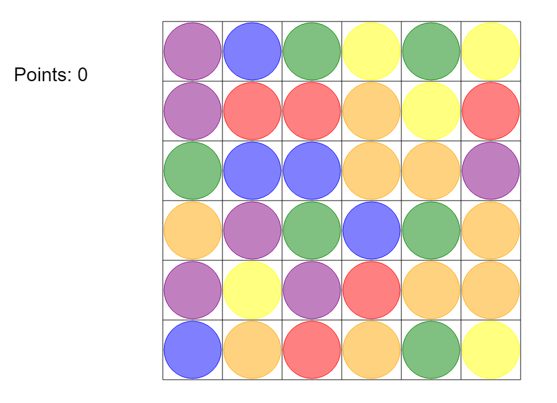
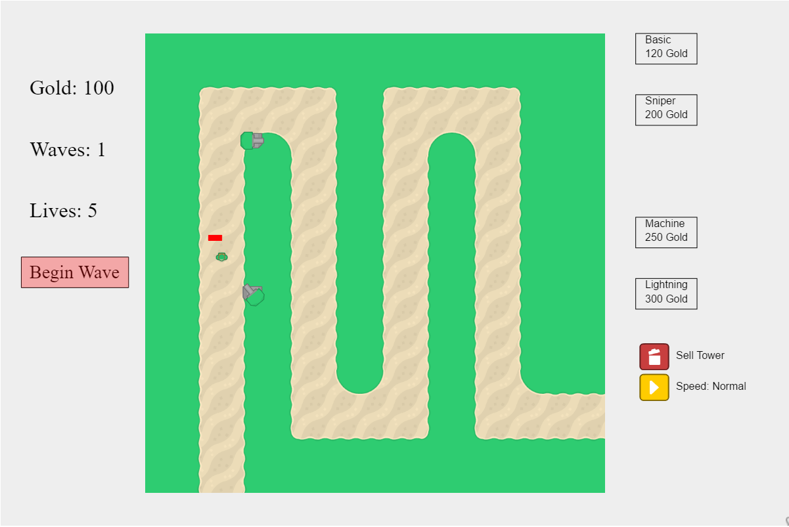

I am a jack of all trades developer, I can be whatever you need me to be. I pick up new languages and libraries as easily as I breathe. From C# and C++ to HTML, CSS, and Javascript, I am familiar with it. Specifically, I have experience in C#, .Net, SQL, Java, Node.js, Express, and MongoDB.
I love debating and discussing new techniques and features. I thrive on peoples' feedback. Researching runs through my veins. My ideal job would be where I would get a request for a new feature, research the options, develop several prototypes, and then present those plus my research and opinions to the higher-ups.
Currently, I am looking for a junior Front End Developer position. What else do you need to know about me? I am at the moment located in Brooklyn, NY and am attending college to earn a degree in Computer Science. My hobbies are baking and electronics. I tinker with Raspberry Pis and Arduinos, currently I am attempting to make my house as smart as possible with mostly my own contraptions. I prefer tabs over spaces, Atom over Vim, Semantic UI over Bootstrap, braces over newlines, and rolling my own code over jQuery.
This was my most current role. My main duties as a junior developer was to maintain and add features to a DSD ("Direct Store Delivery") mobile app for bakery drivers that was on iOS, Android, and Windows Mobile 5.
Maintenance work was just simple bugs that customer would report to us and then assigned to developers to fix. Features that were added could be as simple as a new SQLite DB field or a new screen in the application to show some specific data that that customer wanted to see but could be as complicated as the fingerprint functionality that I added which involved finding a proper library and integrating it.
One of the other features I added were a face login feature using facial recognition and a DB of approved drivers' faces. Additionally, I also created a panic button feature in event of a robbery. I left this position to explore the world of front end web development.
One of my favorite parts of this job was the prototyping. I would frequently get asked to research and then develop a prototype feature, sometimes in native Java, in order for the supervisors to test the feasibility of adding a similar feature to the main app.
One of the projects that I worked on as an intern was a website that would receive GPS data from trucks and display the location and truck stock on a map, to be integrated within another dashboard. We were experimenting with Angular to see if we would use it company-wide as well as seeing how easy it was to use Google Maps API for the map part.
Another experimental project I worked on for AFS was an app for the Google Glass that would connect to a database and retrieve information about a product whose barcode was scanned by the Glass after a keyword was said ("Glass, scan product."). This was written in C# using the Google Glass Developer Kit and Xamarin.Android.
One of my main projects these days is a website called GBF Raiders. It is a tool designed for players of the game Gran Blue Fantasy, a cross-platform game popular in both Japan and America. This site allows players to subscribe to and find "Raids" (player-made rooms that other players can join).The Twitter stream filters out all the raids that are defined in a JSON file and emits them to Socket.io rooms. Players can then subscribe or unsubscribe from those rooms to control which show up in the site. Selected raids are saved in localstorage to survive refreshes. If the server or socket goes down, the site automatically re-subscribes to those rooms on reconnect. I have several thousand users a day and pay for the DigitalOcean server with donations.
The site is hosted at GBFRaiders.com and it's GitHub is public. Upon requests from my users, I have made a companion Chrome extension for this site, available at the Chrome webstore and the code is also visible on GitHub.
This is a beta website that I made for a freelance client of mine. It is a shopping website similar to Etsy but specifically for her products. This is hosted for now on Heroku before being moved to its own dedicated server in the next major update in June 2018. The new site will be using Vue.js. Here is a link to the placeholder site.
As a part of an effort to incorporate more home automation into my house, I built a few temperature sensors using an ESP8266 Feather and a DHT22 and then placed them around the house and one outside. I then created a Node.js server that would collect the readings from these remote sensors and store them as well as get the week's forecast and a feed from our security camera. It exposed a local dashboard that I set as the homepage on a bunch of tablets around the house. I am running the server on a Raspberry Pi 3 that I made some custom case work for to increase cooling capabilities.

While I was learning Javascript, I created a series of games implemented in the HTML Canvas element. One game, Breakout, was created from a Mozilla Developer Network tutorial that I finished and then decided to expand with new assets and sounds. Here is a link to a demo of the game and a link to the Github source for it.
The next canvas game I worked on was a match 3 puzzle game that I was inspired to make after my mother and sister got onto the Candy Crush fad. I created a few utility classes for this like the grid class that I still use for the games I am working on now. Here is a link to a demo of the game and a link to the Github source for it.
The turret defense game was the first full game that I tried to make, as well as the one that took the longest to make. I learned quite a few techniques on this project such as pathfinding and making sprites rotate to face points. Here is a link to a demo of the game and a link to the Github source for it.